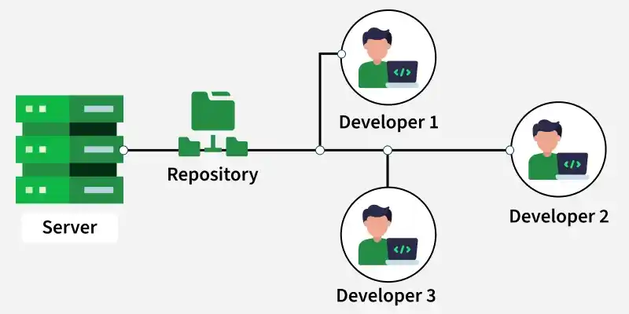
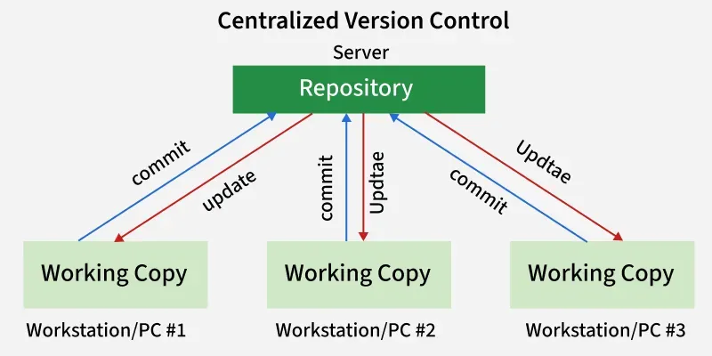
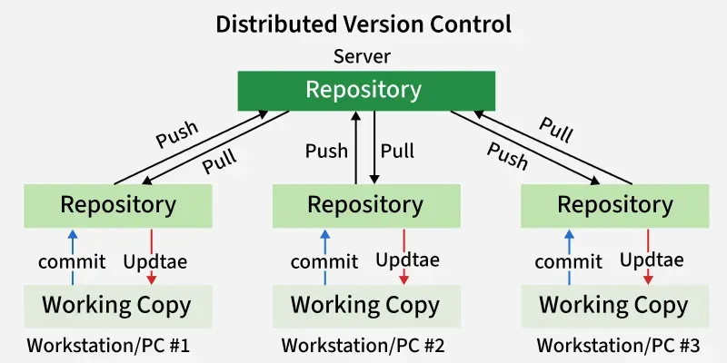
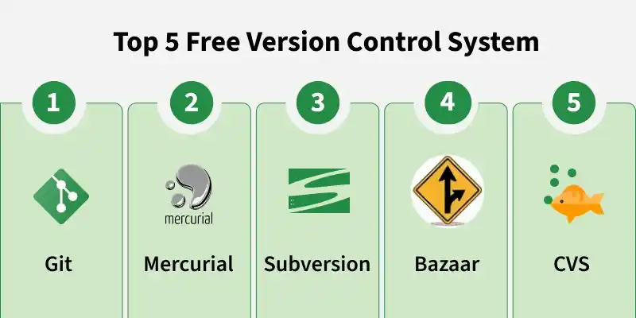
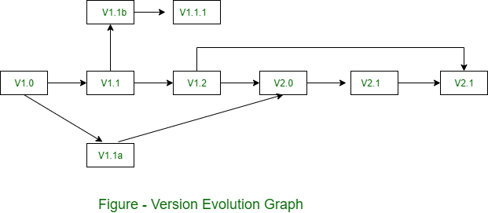

9.6 Software Version Control
A Version Control System (VCS) is a tool used in software development and collaborative projects to track and manage changes to source code and other configuration items. Version control is one of the five SCM activities — see §9.4 SCM Activities — and the CM database referenced in change control is typically implemented as a VCS repository — see §9.5 Change Control Process.
What is a Version Control System?
- A VCS tracks and records changes to the codebase, maintaining a structured project history over time.
- It allows multiple developers to collaborate on the same project without overwriting each other's work.
- Developers access and update a central or shared repository where project files and their complete history are stored.
- Teams can share updates with each other and revert to earlier versions of the project when a change introduces defects.
- Version control keeps track of who made each change, when, and what was modified — supporting accountability, debugging, and auditing.
- A version in SCM terms is a collection of software configuration items (SCIs) representing a defined state of the product — it may contain variants for different platforms or customers.

Core components of a VCS
Version control systems work using a few core concepts that help teams manage code changes and collaborate efficiently:
- Repository: A central (or local) location that stores all project files along with their complete change history and metadata such as author name and commit message.
- Revision: A specific saved version of a file or project, identified using a unique ID such as a hash (Git) or sequential number (SVN).
- Branch: A separate copy of the codebase used to develop features or fix bugs without affecting the main (trunk/master) code line.
- Merging: The process of combining changes from one branch into another — may require resolving conflicts when two developers edited the same lines.
- Commit: A snapshot of changes made to the codebase at a specific point in time, used to track and manage project history.
- Working copy: The local set of files a developer is currently editing — distinct from the repository history until changes are committed.
Types of Version Control Systems
There are three main types of version control systems, each suited to different collaboration needs:
1. Local Version Control Systems (Local VCS)
- A Local VCS stores all project versions on a single computer and is mainly used by one developer without remote collaboration.
- There is no internet or server dependency — all history is kept locally on the developer's machine.
- Useful for individual projects, personal scripts, or learning exercises where no team collaboration is needed.
- Limited to single-user environments — cannot share changes with other developers without manually copying files.
- Examples of local-only approaches include simple directory copies with date stamps, or tools like RCS (Revision Control System).
2. Centralized Version Control Systems (CVCS)
In a Centralized VCS, all files and their version history are stored in a single central server. Developers connect to this server to access or modify files — there is only one official repository.

The typical CVCS workflow:
- Update / Checkout: A developer retrieves the latest version of files from the central server into their working copy.
- Make changes: The developer edits files in their local working copy.
- Commit: The developer saves changes directly back to the central server, making them immediately available to all other team members.
- CVCS enables collaboration among multiple developers through a single shared central repository.
- Administrators have fine-grained access control over who can read or write to the repository.
- CVCS provides visibility into project activities — all changes pass through the central server and are logged centrally.
- CVCS has a single point of failure — if the central server goes down, developers cannot commit or retrieve updates.
- Without server access, developers cannot collaborate or share changes — all work stops until the server is restored.
- Popular CVCS tools: Subversion (SVN) and CVS (Concurrent Versions System).
3. Distributed Version Control Systems (DVCS)
A Distributed VCS allows each developer to have a full local repository along with a working copy of the project. Changes committed locally are not automatically visible to others until pushed to a shared remote repository.

The typical DVCS workflow uses a two-step process to share changes:
- Commit: Saves changes to the local repository — visible only to that developer until pushed.
- Push: Uploads committed changes from the local repository to the central/shared remote repository so others can access them.
- Pull: Downloads changes from the central/shared repository into the local repository and updates the working copy.
- Developers can commit and work offline — full history is available locally without server access.
- DVCS is more resilient — if the central server fails, any developer's local repository can restore the full project history.
- Branching and merging are lightweight and fast because all operations happen locally first.
- Popular DVCS tools: Git, Mercurial, and Bazaar.
| Aspect | Centralized VCS (CVCS) | Distributed VCS (DVCS) |
|---|---|---|
| Repository location | Single central server only | Full local copy on each developer's machine + shared remote |
| Share changes | Single step: commit directly to server | Two steps: commit locally → push to remote |
| Offline work | Limited — needs server for commit/update | Full commit history available offline |
| Server failure | Work stops — single point of failure | Any local clone can restore the repository |
| Branching | Supported but heavier (server-side) | Lightweight, fast, local-first |
| Examples | SVN, CVS | Git, Mercurial, Bazaar |
Popular Version Control Systems

Git
- Git is the most widely used Distributed Version Control System, developed by Linus Torvalds in 2005 for managing the Linux kernel source code.
- It supports decentralised workflows and is the engine behind platforms such as GitHub, GitLab, and Bitbucket.
- Git is lightweight, fast, and efficient — most operations run locally without network access.
- It provides simple and non-destructive branching and merging, making parallel feature development straightforward.
- Key commands: git clone (copy a remote repository), git pull (download and merge remote changes), git push (upload local commits to remote).
- Git is the standard VCS for modern software engineering, DevOps, and CI/CD pipelines.
Subversion (SVN)
- Subversion is a popular centralized version control system — less common in open-source today but still widely used in enterprises.
- Uses a single central repository — all developers commit directly to the server.
- Supports branching and tagging, though branching is less flexible and heavier compared to Git.
- Provides versioning of files and directories with sequential revision numbers (r1, r2, r3…).
- SVN is valued for its simplicity and straightforward centralized structure in organisations with strict access control requirements.
Mercurial
- Mercurial is a distributed version control system similar to Git but with a simpler interface and gentler learning curve.
- It is simple, fast, and scalable — suited to both small and large projects.
- Supports branching and merging with tools for managing project history and changes.
- Used in various open-source and enterprise projects; historically used by Facebook and Mozilla.
CVS (Concurrent Versions System)
- CVS is an early centralized version control system widely used in the late 1990s and early 2000s.
- It influenced modern VCS tools and laid the foundation for systems like Subversion.
- Uses a centralized repository architecture — tracks changes to individual files over time.
- Allows multiple developers to work on the same codebase concurrently.
- Provides basic branching and tagging, though more limited than modern alternatives — largely replaced by SVN and Git today.
Bazaar
- Bazaar is a distributed version control system developed by Canonical (creators of Ubuntu).
- Supports both centralized and distributed workflows — can be used like SVN or like Git depending on project needs.
- It is beginner-friendly and easy to learn, with human-readable commands such as bzr commit and bzr push.
- Provides cross-platform support (Linux, Windows, macOS); historically used in Ubuntu and Launchpad projects.
Importance of version control in SCM
- Collaboration: Multiple developers work on the same project simultaneously without corrupting each other's changes.
- Complete history: Every change is recorded with author, timestamp, and message — supporting debugging, auditing, and rollback.
- Rollback capability: If a new change breaks the system, the team reverts to any previous known-good revision instantly.
- Parallel development: Feature branches, release branches, and hotfix branches are managed and merged systematically.
- Baseline support: Tags and release branches mark baselines that correspond to formally approved product snapshots — see §9.2 Baselines.
- Change control integration: CIs are checked out, modified, tested, and checked in through the VCS as part of the change control process.
- CI/CD integration: Automated build, test, and deployment pipelines trigger on every commit or push to the repository.
Four version control sub-activities (SCM)

- Identifying new versions: Each time changes are made and saved, the VCS creates a new unique version or revision. Prior versions (v0, v1, v2…) are stored for reference and rollback.
- Numbering scheme: Versions follow a structured naming convention — typically X.Y.Z where X = whole SCI or major release, Y = component-level change, Z = minor correction within a component (e.g. 1.0 → 1.1 → 1.1.1 → 1.2 → 2.0).
- Visibility: The version number or revision ID appears in the document frame, commit message, or tag so all team members know which version they are viewing or editing.
- Tracking: A version development graph records the history of changes — who made each change, when, and what was modified — maintaining accountability across the team.
Version evolution example
- After initial release at version 1.0, minor corrections produce 1.1, then 1.1.1 and 1.1.2.
- A major update creates version 1.2; development of the 1.x line continues through 1.3 and 1.4.
- A significant architectural change creates a new evolutionary path — version 2.0 — while version 1.x may still be supported for existing customers on a separate branch.
- Both evolutionary paths are maintained simultaneously, each with its own branch in the VCS — e.g. main (2.x) and release-1.x (maintenance branch).
Git workflow — practical example
Modern software projects use Git as the standard DVCS. A typical SCM-integrated workflow:
# Clone the shared remote repository (full local copy)
git clone https://github.com/org/project.git
cd project
# Create a feature branch (parallel development without affecting main)
git checkout -b feature/login-module
# Stage and commit changes to LOCAL repository
git add login.py auth.py
git commit -m "Add login module — refs CR-042"
# Push branch to remote so team can review
git push -u origin feature/login-module
# After CCB approval and code review — merge to main
git checkout main
git pull # get latest remote changes
git merge feature/login-module # merge approved feature
# Tag the release baseline
git tag -a v1.1.0 -m "Release 1.1.0 — baseline approved by CCB"
# Push merged main and tag to remote repository
git push origin main
git push origin v1.1.0
# View full commit history
git log --oneline --graph# Centralized VCS workflow (Subversion)
# Checkout working copy from central server
svn checkout https://svn.example.com/repo/trunk working-copy
cd working-copy
# Update working copy with latest server changes
svn update
# Edit files locally, then commit directly to central server
svn commit -m "Fix bug in payment module — refs CR-019"
# All team members see the change immediately after commit
# No separate push step — commit goes directly to central repositoryQ: What is a Version Control System? Explain its components, three types (Local, Centralized, Distributed), and compare CVCS with DVCS. Name popular VCS tools.
Model answer points:
- VCS = tool to track/manage code changes; enables collaboration, history, rollback; part of SCM.
- Components: repository, revision, branch, merge, commit, working copy.
- Local VCS: single machine, no server, single user, no collaboration.
- CVCS: single central server; checkout → edit → commit (one step to share); SVN, CVS; single point of failure.
- DVCS: full local repo per developer; commit → push (two steps); pull to sync; offline work; Git, Mercurial, Bazaar.
- CVCS vs DVCS: repository location, share mechanism, offline capability, server failure resilience, branching.
- Git (DVCS, 2005, GitHub/GitLab); SVN (CVCS); Mercurial (DVCS); CVS (early CVCS); Bazaar (DVCS, dual mode).
- SCM sub-activities: identify versions, X.Y.Z numbering, visibility, tracking graph.
- Integrates with change control (check-out/in) and CI/CD pipelines.